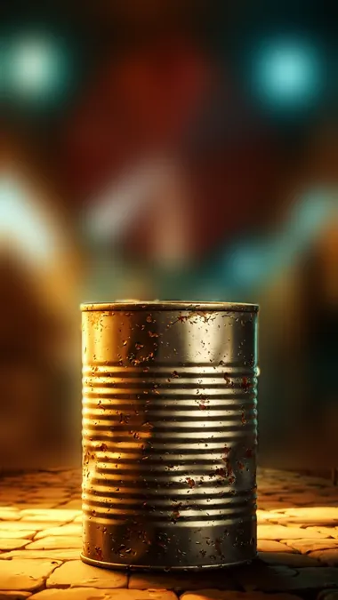

5-sahna — 9:16 (tik), 8 s

Ovoz
Muddati o'tgan mahsulotni yemang.
Kamera: tez yaqinlashib, qotib turishVertical 9:16, 8 seconds. Start from the attached image and keep its place, background, objects and colours exactly as in the image for the whole clip. Do not add any shop, street, sign, text, label or person. Camera: snap push-in, then hold. A dull, old, slightly dented tin can in the centre of the frame. A big glowing red round sign floats above it: a solid red disc with one thick white horizontal bar across its middle and nothing else on it, no letters, no words, no flame. It pulses and red light flashes on the walls. Hard dramatic contrast, dark background. Semi-realistic hand-painted cartoon illustration style, rich and detailed, warm golden glow with cyan-blue neon lamps; the background is only softly blurred bokeh lights and plain surfaces, never a readable street, shop, sign or building front. Only 2-3 main colours in the frame: golden yellow, cyan blue and one accent (red for danger). Nobody appears: no people, no faces, no hands, no human figures, no silhouettes of people. One continuous shot, no cuts. The camera never stops moving. Negative: no people, no faces, no hands, no human silhouettes, no text, no letters, no numbers, no Arabic or any other script, no signs, no shop signs, no storefronts, no subtitles, no captions, no logos, no brand marks, no watermarks.